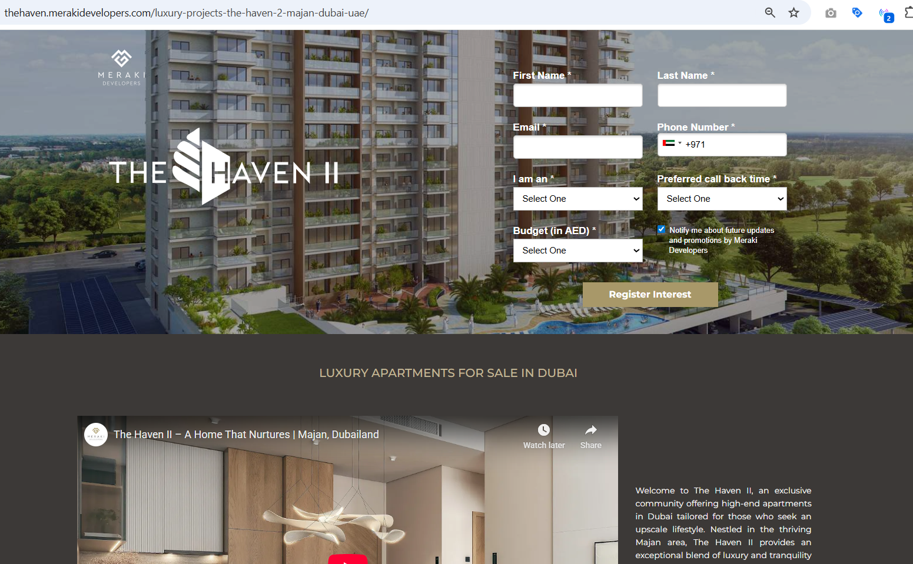
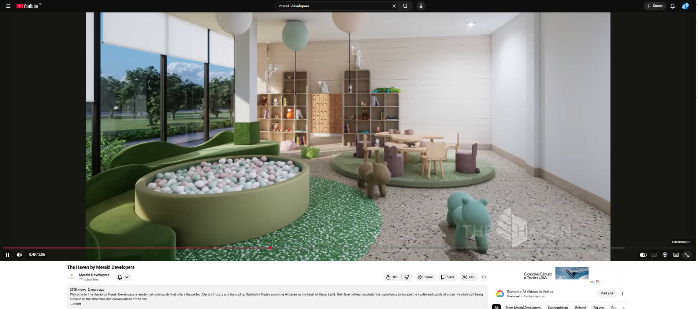

Meraki Developers
Building the lead generation engine behind a new project launch.
When I joined Meraki Developers, the business was preparing to launch its next residential project after several quiet years following its first development and the COVID period. Digital activity was minimal, paid campaigns were inactive, and no structured lead generation system existed. I built the performance marketing foundation from scratch across paid media, landing pages, CRM integration, conversion tracking, WhatsApp API, and social content to support the launch of The Haven I.

The Haven I
Built the digital lead generation system supporting the launch of a new residential project in Dubai.
Google Ads, Meta Ads, Video, Social
Focused heavily on Google Search while using Meta and other formats to support reach and lead flow.
Unbounce pages, Bitrix24, tracking, WhatsApp API
Created the infrastructure required to generate leads, route them properly, and support follow-up.
Lead generation and conversion quality
Built the funnel around direct developer lead capture, better attribution, and stronger campaign efficiency.
A new launch needed a full digital reset
Meraki had launched one project before COVID, paused new development activity for several years, and later prepared to launch The Haven I. The digital marketing function had to be built properly before lead generation could scale.
What I walked into
Paid campaigns were inactive, historical performance data was not useful for optimisation, social channels had been dormant since around 2021, and no structured direct-to-developer lead engine was in place. The company was entering a new launch phase and needed marketing infrastructure that could support lead generation from day one.
Core gaps
- No active paid campaigns across Google or Meta
- No structured lead generation funnel
- No reliable conversion tracking or attribution setup
- No proper marketing integration with Bitrix24 CRM
- Social accounts existed but had been inactive for a long period
- Landing page journeys and form flows needed stronger conversion focus
Hands-on ownership across strategy, execution, and measurement
My title was Digital Marketing Specialist. The work itself covered much more than campaign delivery. I handled performance marketing, CRM coordination, content direction, landing page optimisation, and tracking implementation with a strong focus on lead generation.
Strategic ownership
- Defined the paid media approach for The Haven I launch
- Designed lead generation campaign structures from scratch
- Set the social content pillars and content calendar
- Guided the direction of ad copy and many of the creatives
Cross-functional work
- Integrated marketing channels and forms with Bitrix24 CRM
- Worked with the website developer to improve UI and UX
- Built Unbounce landing pages to support campaign traffic
- Set up WhatsApp API and automated lead follow-up elements
The launch-ready lead generation system behind Meraki
The work combined performance marketing, lead capture, CRM integration, content, and conversion tracking into one coordinated setup built to support a project launch.
Lead generation campaigns
Built and managed structured campaigns across Google Search, Meta lead generation, awareness, engagement, and video to drive project enquiries.
- Focused heavily on high-intent Google Search traffic
- Launched Meta campaigns for direct lead capture and awareness support
- Tested targeting, messaging, and bid strategy based on real performance
- Worked toward stronger lead quality and lower acquisition inefficiency
Landing pages and journey design
Built campaign landing pages in Unbounce and worked on website improvements to create smoother lead capture journeys.
- Designed Unbounce landing pages to match campaign intent
- Improved page structure and form journeys for better conversion flow
- Worked with the developer to improve website UI and UX
- Made the web experience more supportive of paid traffic and enquiries
CRM integration and automation
Connected marketing forms and landing pages with Bitrix24 to create a more structured follow-up process for incoming leads.
- Integrated website forms and landing page forms into Bitrix24
- Built automated lead flow and internal notification logic
- Enabled email notifications for enquiry submissions
- Supported cleaner follow-up processes for the sales team
Tracking and attribution
Set up conversion tracking so campaign decisions could be grounded in actual performance rather than assumptions.
- Implemented conversion tracking across relevant channels
- Created a stronger attribution baseline for optimisation
- Connected conversion understanding with campaign iteration
- Improved clarity around what was producing enquiries
Content and social reboot
Reactivated social media and introduced a more consistent content direction to support awareness and engagement around the project.
- Created the content strategy, pillars, and calendar
- Produced many of the social creatives directly
- Worked with designers when scale and workload required support
- Helped shift content toward more engaging video-first output
WhatsApp API and communication flow
Added communication infrastructure that supported faster acknowledgement and smoother prospect handling.
- Set up WhatsApp API for business communication needs
- Supported enquiry acknowledgement and structured messaging flow
- Helped strengthen follow-up readiness around incoming leads
- Added another useful layer to the project launch funnel
What this work changed
The result was a structured lead generation foundation that supported Meraki’s new project launch with stronger campaign performance, better lead flow, and clearer follow-up systems.
Direct developer lead generation
Introduced a more structured direct lead acquisition approach instead of relying mainly on brokerage-driven conversions.
Improved conversion quality
Search-led intent capture, better landing page structure, and tighter targeting helped strengthen lead quality and funnel efficiency.
Revived digital presence
Social channels returned to consistent activity, content output improved, and the launch had a stronger digital presence to support visibility.
Campaign assets and funnel touchpoints

Landing page built for paid campaigns
Conversion-focused landing pages built in Unbounce to support paid traffic and capture enquiries for The Haven project.

Project video used in paid campaigns
Project video used in YouTube and social campaigns to support the launch of The Haven. It remains the highest viewed video on the Meraki Developers YouTube channel.
What this project says about how I work
- I build launch-ready marketing systems from the ground up when structure is missing.
- I connect paid media, landing pages, CRM, tracking, and content into one working lead generation setup.
- I stay hands-on with both execution and optimisation while keeping the funnel aligned end to end.
- I use performance signals, user journey fixes, and better follow-up systems to improve marketing outcomes over time.
Want to see another project?
My next case study shows the more technical side of my work through platform builds, WordPress customisation, CRM-connected experiences, and property search UX.